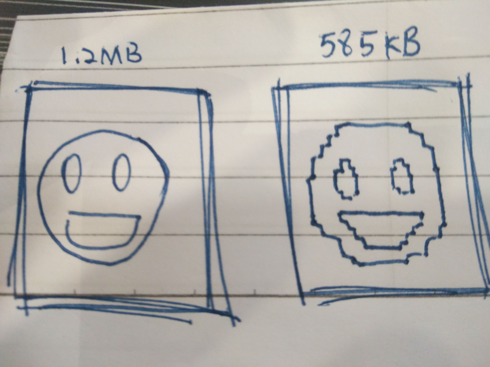
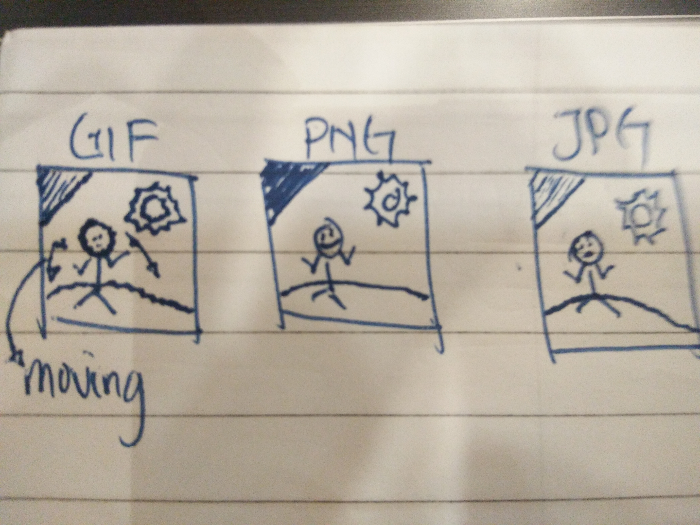
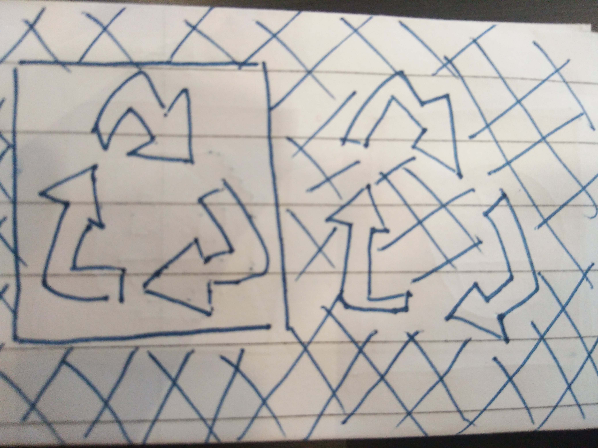
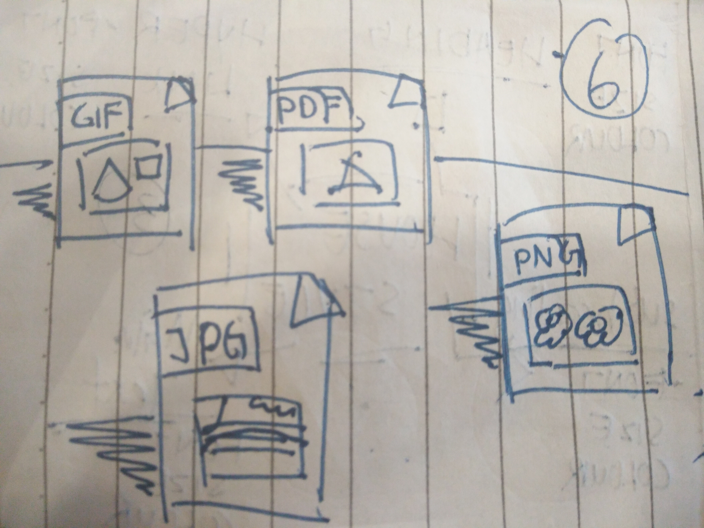

Many factors that affect the file size of an image, the first affect the size on image is number of colours or different of colours, because system will need to use more time to resolution colours of image and the colour of image is 0 to 255, and the colour the dark, the size of image more big. After that, physical pixel dimensions also will affect size of image because the pixel the higher, the definition the higher. Next is compression, it can compression image to more small but it's may damage image. Furthermore is file type, the normal file type is PNG, JPG, GIF the most bigger size of image is GIF because GIF is a image that have movement affect but the definition is lower than other. PNG is an image file with high definition, bright-colours than other and probability of damage lower than other. Last, size of JPG will lower than GIF and PNG because the colours and definition is lower than PNG.
Applied to PNG is over GIF because GIF doesn't support all tranparency.So PNG is more suitable for advanced transparancy than GIF, PNG compression well than GIF and definition higher than GIF, cause GIF is an image file for animation and it's definition will lower than other type file, and colours will brighter than GIF.
The common methods to optimise images download size and number or requests from web server is choosing an image format, we could looking for the ways to reduce the total number of image requests on your site. Next, this is the most importance method to optimise images, we can focus to how compress images and meke image size more small, what colour we need on image, simplify image, for example, think about that do we need transparent or animation.
